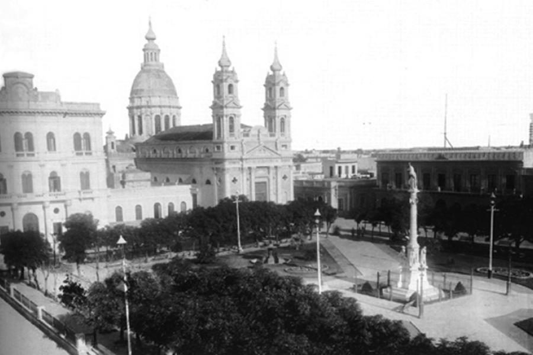

Muy cercana a las aguas del Paraná, surgió esta prometedora ciudad, hacia el 1730.
Desde sus comienzos, Rosario se vincula directamente con el torrentoso río, aprovechando las riquezas que brinda a su paso.
La Basílica De Nuestra Señora del Rosario cumplió un papel esencial cuando Rosario era tan solo un caserío que se levantaba a su alrededor.
El estuario del Río de La Plata fue la puerta por la cual miles de barcos acercaron a aquellos sedientos de trabajo y de un nuevo hogar.
Hacia 1852 y luego de un largo período, fue declarada ciudad. Sus primeros pobladores se dedicaron a la agricultura y la ganadería.
Rosario se estaba formando, crecía y tomaba poder. Es en este contexto en cual surge la idea de convertir a esta ciudad en la Capital Federal de la República Argentina.
Esta iniciativa llegó a contar con votaciones favorables en tres oportunidades en las cámaras del Congreso de la Nación. Pero los vetos presidenciales de Bartolomé Mitre y de Domingo Sarmiento, más los difíciles momentos políticos de la etapa conocida como "Organización Nacional", hicieron que las iniciativas fracasaran.
Lo que ya por entonces era una gran ciudad, creció en dinamismo gracias al desarrollo de su enorme potencial industrial y comercial. Esto a su vez motorizó el avance de nuevos barrios y poblados adyacentes, cuya gran calidez alcanzó su máxima expresión en el verde de sus parques, plazas y riberas.
Rosario también detenta otro orgullo en sus clubes de fútbol, auténtica e inagotable cantera de talentos que brillan en las mayores ligas del mundo. Un clásico entre Rosario Central y Newell's Old Boys es un espectáculo digno de verse.
La ciudad se ha desarrollado también como centro de actividad científica y cultural, hasta tener en la actualidad 6 universidades con casi 80 mil estudiantes; 18 institutos de investigación científica y 2 institutos de transferencia de tecnología.
Esto, sumado a su privilegiada ubicación, sus excelentes vías de comunicación y su gran actividad comercial e industrial la han transformado en uno de los principales sitios del país para la realización de ferias y congresos.
Rosario tiene siempre sus puertas abiertas, con los más distinguidos restaurantes, la mejor infraestructura hotelera y todo listo para atenderlo como a un invitado especial.
(fuente rosarioturistica.com.ar).

Siglo XX
Ya con el servicio de luz eléctrica funcionando, Rosario era para comienzos del siglo XX una ciudad moderna.
Para la primera década del siglo, la ciudad ya contaba con el Parque de la Independencia -un espacio verde de grandes dimensiones diseñado por reconocidos paisajistas-, el teatro La Ópera y tres clubes de fútbol. Llegando a los años 20, Rosario amplíaba su trayecto educativo con la Biblioteca Argentina y la Universidad del Litorial, reforzando el perfil cosmopolita de la ciudad.
El barrio Pichincha fue el centro de afincamiento de las llamadas “casas de tolerancia” que recibían la visita de hombres de todo el país. Los prostíbulos mejoraron sus instalaciones , adaptaron nombres refinados como Royal, Torino, El Gato Negro, Mouline Rouge, Armenonville y el famoso y más caro Madame Safó.
La segunda mitad del siglo siguió con movimiento, en 1957 quedó inaugurado el Monumento Nacional a la Bandera y en los '60 se realizó la primera transmisión televisiva. Culminando la década, en 1969, la ciudad fue protagonista de un hecho político de trascendencia nacional, el Rosariazo, un levantamiento obrero que copó las calles y sumó vecinos que manifestaron su disconformidad con el gobierno militar de Onganía.
Durante la dictadura militar de 1976, la ciudad vivió -al igual que el país- una época signada por el terror, los secuestros y la censura. Donde actualmente se emplaza el Museo de la Memoria funcionaba el Comando del 2º Cuerpo del Ejército, lugar desde el cual se diseñó el plan de persecución y exterminio que se desplegó sobre seis provincias de la Argentina. El retorno a la democracia en 1984 fue celebrado por miles de rosarinos en el Monumento a la Bandera.
Llegando al final del siglo, los momentos más difíciles se ubicaron en mayo de 1989 con violentos saqueos y e incidentes en comercios que llevaron a declarar el estado de sitio durante 30 días. Luego, la crisis de finales de los '90, que se desencadenó en diciembre de 2001 que finalizó con un saldo de 7 muertos en la provincia de Santa Fe.